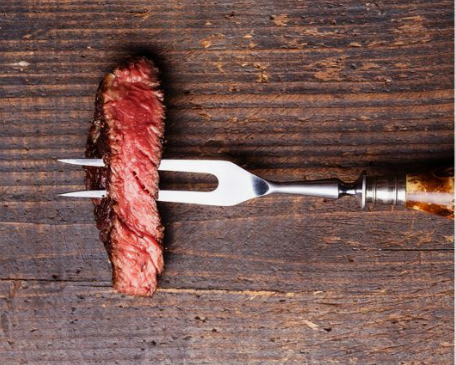
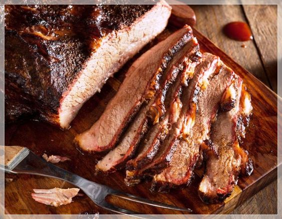
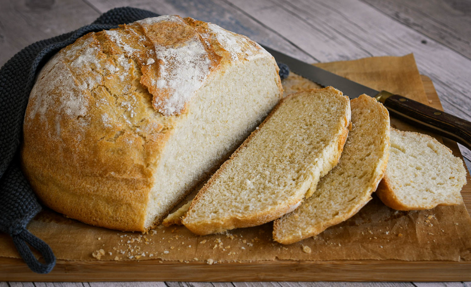
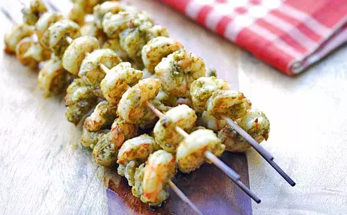

Novedades
Como salar carne

➡️Colocar sal gruesa y dejar como si fuesen perlitas que da un sabor increíble. Otra opción es salar la carne con salmuera, necesitamos diluir 100 gr. de sal gruesa en un litro de agua, lo calentamos a un lado del fuego y luego vamos pintando la carne con este líquido.
➡️ Se puede aplicar antes o despues de colocarla sobre el fuego:
Antes: Para esto necesitamos extender la carne sobre una mesa o tabla, luego la cubrimos con sal a través de sus ambos lados, masajeándola suavemente. Después: Para seguir esta técnica debemos poner la carne en la parrilla, sin haberlo salado antes. Antes de dar la vuelta debemos salar la carne que esta hacia arriba y todavía se encuentre cruda.
Cocinar carne ahumada

Hay dos tipos principales de Ahumado:
➡️Ahumado en frío , en el que las carnes se exponen a humo a baja temperatura (alrededor de 60-120 ° F) lejos de la fuente de calor, con fines de conservación y sabor. El ahumado en frío no cocina las carnes, por lo que a menudo se curan primero, como con el salmón ahumado.
➡️El ahumado caliente (también conocido como barbacoa), por el contrario, implica exponer las carnes a un humo lo suficientemente caliente como para cocinarlas lentamente (alrededor de 200-300 ° F). Al ahumar en caliente, le agrega sabor a la carne de dos maneras: impartiendo compuestos de sabor ahumado en la superficie de la carne y mediante la cocción lenta, que puede hacer que ciertos cortes sean increíblemente tiernos.
Tips para un buen pan casero

➡️Tiempo: Para hacer pan casero y artesano no hay que tener prisa, el pan necesita tiempo para fermentar y desarrollar sus sabores, cuanto más tiempo repose el pan (dentro de un límite...), mejor sabrá y sentará. Si se hace un buen proceso de fermentación, el pan tendrá más volumen y será más esponjoso además de ser más digestivo ya que restaura y conserva la flora bacteriana.
➡️Los ingredientes: El agua debe estar fría, a la temperatura que sale del grifo, si se utiliza agua caliente, se estará forzando la fermentación para hacerla más corta y perjudicará por lo tanto al acelerar artificialmente uno de los pasos más importantes de la elaboración del pan.
➡️Tipo de levadura: Para elaborar un pan artesano, se puede utilizar levadura de panadero o levadura natural, es decir, masa madre. Nunca se debe mezclar la levadura de panadero junto con sal, ya que perderá sus propiedades.
Festeja tu cumpleaños con nosotros!

Todo cumpleañero merece ser agasajado y nosotros tenemos muchas propuestas para hacer de tu festejo un momento memorable.
Fogo Parrilla es un espacio para relajarse y disfrutar de la calidez del servicio y el auténtico sabor argentino, por eso te invitamos compartirlo con nosotros.
Escribinos a fogoparrilla@gmail.com y te preparamos una propuesta de acuerdo a tus necesidades.
Camarones al pesto

Te traemos una receta inolvidable para ampliar tu menu parrillero!
➡️Ingredientes:
500 grs. de camarones pelados.
1/2 taza de #pesto.
Palitos de brochettes.
➡️Procedimiento:
Limpiá muy bien los camarones, retirando la parte negra de la espalda con un cuchillo muy fino. Lavalos y secalos.
Mariná con el pesto durante media hora en la heladera.
Asalos por los dos lados a fuego bajo, hasta que estén rosados. No necesitás agrega aceite ya que el pesto contiene suficiente oliva para evitar que se peguen.
¡Listo! Servilos acompañados de una ensalada de palta y pepino.
¡Van a quedar todos alucinados con este nuevo sabor!
Tips parrilleros
➡️Saca la carne fresca del refrigerador 2 horas antes de asarla, para que alcance una temperatura ambiente.
➡️Debes poner la carne sobre la parrilla sólo cuando las brasas estén bien hechas. Si lo haces antes la carne puede quedar con un sabor desagradable.
➡️No muevas los alimentos recién puestos sobre la parrilla porque van a estar pegados a la parrilla. Dales tiempo antes de manipularlos.
➡️La temperatura de cocción que apliques a tu asado siempre debe ir de más a menos.
➡️Si tienes dudas sobre el punto de cocción, es mejor más cruda que cocida, porque siempre podrás seguir asando si le falta, pero si se sobrecoció no hay vuelta atrás.